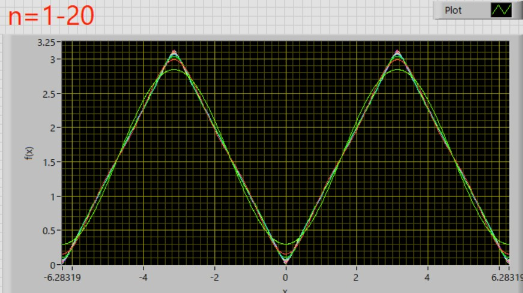

フーリエ級数展開-14
ここで，三角関数を用いて解いた三角波を複素数表示で解いてみましょう．
・三角波
三角波，
\( \Large f(x) = |x| \hspace{10pt} (- \pi \leq x < \pi ) \)
書き換えると，
\( \Large f(x) = \left\{ \begin{array}{c} \hspace{10pt} -x \hspace{20pt} (-\pi \leq x < 0) \\ \hspace{10pt} x \hspace{20pt} (0 \leq x < \pi) \end{array} \right. \)
の場合を考えます．
フーリエ級数展開は，
\( \Large \displaystyle f(x) = \sum_{n= - \infty}^{ \infty} C_{n} \cdot e^{i \frac{ n \pi}{L}x } \)
\( \Large \displaystyle C_n = \frac{1}{2L} \int_{ - L}^{ L} f(x) \ \displaystyle e^{- i \frac{ n \pi}{L}x } \ dx \)
となり，積分範囲から，L＝ π，となるので，
\( \Large \displaystyle f(x) = \sum_{n= - \infty}^{ \infty} C_{n} \cdot e^{i n x } \)
\( \Large \displaystyle C_n = \frac{1}{2 \pi} \int_{ - \pi}^{ \pi} f(x) \ \displaystyle e^{- i n x} \ dx \)
となります．
n=0，の場合は，
\( \Large \displaystyle C_0 = \frac{1}{2 \pi } \int_{ - \pi}^{ \pi} f(x) \ dx
= \frac{1}{2 \pi} \left\{ \int_{ - \pi}^{ 0} (-x) \ dx + \int_{0}^{ \pi} x \ dx \right\} \)
\( \Large \displaystyle
= \frac{1}{2 } \left\{ -\left[ \frac{1}{2} x \right]_{- \pi}^0 + \left[ \frac{1}{2} x \right]_0^{ \pi} \right\}
=
\frac{1}{2 \pi } \left( \frac{ \pi^2}{2}+ \frac{ \pi^2}{2} \right) = \frac{\pi}{2} \)
n≠0，の場合は，
\( \Large \displaystyle C_n = \frac{1}{2 \pi } \int_{ - \pi}^{ \pi} f(x) \cdot e^{-i n x }\ dx
= \frac{1}{2 \pi} \left\{ \int_{ - \pi}^{ 0} (-x) \cdot e^{-i n x } \ dx + \int_{0}^{ \pi} x \ e^{-i n x }\ dx \right\}
= \frac{1}{2 \pi} \left\{ -\int_{ - \pi}^{ 0} x \ e^{-i n x } \ dx + \int_{0}^{ \pi} x \ e^{-i n x }\ dx \right\}\)
これは，ここ，で説明した，瞬間部分積分，を使えば簡単に解け，
\( \Large \displaystyle \int x \ e^{ -inx} \ dx \)
を考えていきます．瞬間部分積分を使えば，
| + | x | \( \Large \displaystyle -\frac{1}{in} e^{-inx} \) |
| - | 1 | \( \Large \displaystyle \left(-\frac{1}{in} \right) \left(-\frac{1}{in} \right) e^{-inx} = - \frac{1}{n^2} e^{-inx} \) |
\( \Large \displaystyle - \int x \ e^{ -inx} \ dx = + \frac{1}{in} x \ e^{-inx} - \frac{1}{n^2} e^{-inx} + C \)
\( \Large \displaystyle \int x \ e^{ -inx} \ dx = - \frac{1}{in} x \ e^{-inx} + \frac{1}{n^2} e^{-inx} + C \)
となります．したがって，それぞれ，
\( \Large \displaystyle - \int_{ -\pi}^0 x \ e^{ -inx} \ dx = \left[ \frac{1}{in} x \ e^{-inx} - \frac{1}{n^2} e^{-inx} \right]_{- \pi}^0 \)
\( \Large \displaystyle = \left( 0 - \frac{1}{n^2} \right) - \left( \frac{- \pi}{in} \ e^{in \pi} - \frac{1}{n^2} e^{in \pi} \right) \)
\( \Large \displaystyle = \frac{1}{n^2} \ ( e^{in \pi} - 1) + \frac{\pi}{in} e^{in \pi} \)
同様に，
\( \Large \displaystyle \int_0^{ \pi} x \ e^{ -inx} \ dx = \left[ -\frac{1}{in} x \ e^{-inx} + \frac{1}{n^2} e^{-inx} \right]_0^{ \pi} \)
\( \Large \displaystyle = \left( \frac{- \pi}{in} \ e^{-in \pi} + \frac{1}{n^2} e^{-in \pi} \right) -\left( 0 + \frac{1}{n^2} \right)\)
\( \Large \displaystyle = \frac{1}{n^2} \ ( e^{-in \pi} -1 ) - \frac{\pi}{in} e^{-in \pi} \)
となります．指数の肩の極性が異なることに注意です．まとめると，
\( \Large \displaystyle \int_{ - \pi}^{ 0} (-x) \cdot e^{-i n x } \ dx + \int_{0}^{ \pi} x \ e^{-i n x }\ dx \)
\( \Large \displaystyle = \frac{1}{n^2} \ ( e^{in \pi} -1) + \frac{1}{in} e^{in \pi} + \frac{1}{n^2} \ ( e^{-in \pi} -1 ) - \frac{1}{in} e^{-in \pi}\)
\( \Large \displaystyle = \frac{1}{n^2} \ ( e^{ in \pi} +e^{in \pi} -2 ) + \frac{\pi }{in} (e^{in \pi} - e^{-in \pi}) \)
となります．ここで，
\( \Large \displaystyle e^{i n \pi} = e^{-i n \pi} = (-1)^n \)
\( \Large \displaystyle e^{i n \pi} - e^{-i n \pi} = 0 \)
\( \Large \displaystyle e^{i n \pi} + e^{-i n \pi} = 2 (-1)^n \)
となりますので，
\( \Large \displaystyle C_n = \frac{1}{2 \pi } \int_{ - \pi}^{ \pi} f(x) \cdot e^{-i n x }\ dx \)
\( \Large \displaystyle = \frac{1}{2 \pi } \frac{1}{n^2} \left\{ 2 (-1)^n -2 \right\} \)
\( \Large \displaystyle = \frac{1}{\pi n^2} \left\{ (-1)^n -1 \right\} \)
\( \Large = \left\{ \begin{array}{c} \hspace{10pt} - \frac{2}{ \pi n^2 } \hspace{20pt} ( n = odd ) \\ \hspace{20pt} 0 \hspace{20pt} (n = even) \end{array} \right. \)
となります．
今回の計算では，
\( \Large \displaystyle f(x) = \frac{ \pi}{2} + \sum_{n=1}^{ \infty} ( C_{-n} \cdot e^{-i n x } + C_{n} \cdot e^{i n x }) \)
となることは前ページに記載しました
第二項，第三項はそれぞれ，オイラーの公式から，
\( \Large \displaystyle C_{n} \cdot e^{i n x } = \frac{1}{ \pi n^2} \left\{ 1-(-1)^n \right\} \{ cos (nx) + i \ sin (nx) \} \)
\( \Large \displaystyle C_{-n} \cdot e^{-i n x } = -\frac{1}{ \pi n^2} \left\{ 1-(-1)^n \right\}\{ cos (nx) - i \ sin (nx) \} \)
となるので，
\( \Large \displaystyle C_{n} \cdot e^{i n x } + C_{-n} \cdot e^{-i n x } = \frac{1}{ \pi n^2} \left\{ (-1)^n -1 \right\} \left[ \{ cos (nx) + i \ sin (nx) \} - \{cos (nx) - i \ sin (nx) \} \right] \)
\( \Large \displaystyle = \frac{2}{ \pi n^2} \left\{ (-1)^n -1 \right\}\left[ \ cos (nx) \right] \)
となりますので，
\( \Large \displaystyle f(x) = C_0 + \sum_{n=1, odd}^{ \infty} ( C_{-n} \cdot e^{-i n x } + C_{n} \cdot e^{i n x }) \)
\( \Large \displaystyle= \frac{1}{2 \pi } - \sum_{n=1, odd}^{ \infty} \frac{4}{ \pi n^2 } \left[ \frac{ cos (nx)}{n} \right] \)
\( \Large \displaystyle= \frac{1}{2 \pi } - \frac{4}{ \pi} \left( cosn \ x + \frac{1}{3^2} cos \ 3x + \frac{1}{5^2} cos \ 5x + ........... \right) \)

と，三角関数の場合，と同じ結果となります．
次は，ノコギリ波です．